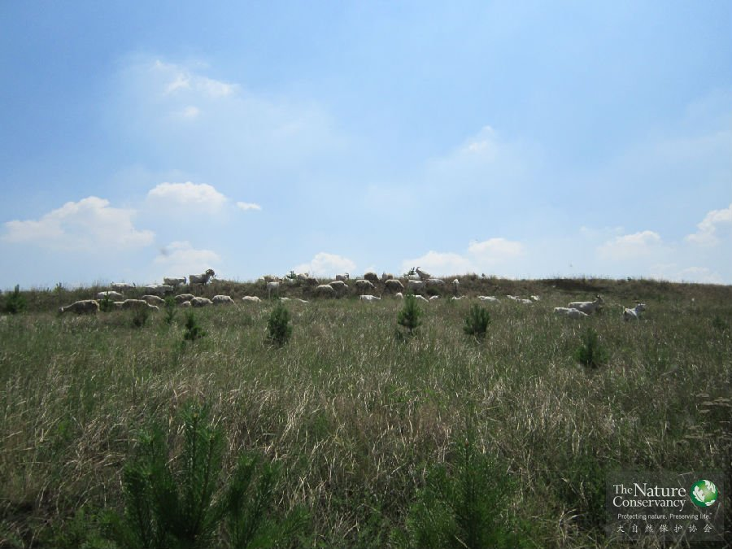

项目概览
内蒙古®TNC
背景
气候变化、水资源短缺和生物多样性丧失，已经成为全球最为严重的环境问题，内蒙古作为保障我国生态安全的重要屏障，深受这些环境问题的影响——由于上述环境问题，生态系统逐渐退化，屏障功能日渐削弱，严重威胁到了我国的可持续发展，脆弱的生态急需修复。2010年8月，TNC与老牛基金会等合作伙伴共同启动了内蒙古生态修复和保护项目，致力于探索适应内蒙古干旱及半干旱地区关键生态系统的可持续修复方案。
目标
在内蒙古选取不同类型的关键生态修复区域作为示范点，从制定科学的生态修复规划和因地制宜的实地生态修复示范两方面，探索出内蒙古干旱半干旱区的生态修复之道，打造并推广“生态修复与经济发展相平衡”的可持续生态修复模式。
TNC的思考
近年来，内蒙古相继启动了多项生态修复工程，然而其生态修复工作形势依然严峻，主要面临着两方面的问题：
一、缺少“因地适宜”的系统而科学的规划：内蒙古幅员辽阔、生态系统多样而复杂，单一的修复方法不能满足需求。需要系统、科学的生态修复规划，识别出关键的生态修复和保护区域，确定修复的目标，才能让生态修复工作发挥更高的效力。
二、生态修复对修复地的经济价值考虑不足，缺乏可持续性：生态修复是一个长期的过程，后期的维护不可或缺。由于缺少经济收益，修复的生态系统依然承受着不合理的干扰，若干年后退化或死亡的情况，并不少见。
TNC的解决方案
与地方政府、研究机构、NGO、企业合作，探索适应气候变化的内蒙古干旱半干旱区关键生态系统的修复方案，打造一套“生态修复保障经济发展，经济发展支撑生态修复”的可持续修复模式。包括两方面的内容：
1. 在内蒙古干旱半干旱区探索出并推广基于生态区评估（Eco-regional Assessment，ERA）和气候变化分析的生态修复规划方案；
2. 建立两个示范点，展示重要生态功能区内关键生态系统的修复和管理模式，建立起生态修复与产业发展间的联系。
和林格尔县是项目的第一个示范点，位于内蒙古中部呼和浩特市以南，属于生态系统类型较为复杂的农牧交错带，是内蒙古高原向黄土高原的过渡地带，也是森林和草原的过渡带，属于国家的生态脆弱区。在气候变化的背景下，这里将是南北两个陆地生物多样性保护优先区之间物种迁移最重要的潜在廊道，对于生物多样性保护有深远的意义。在和林格尔实施的生态修复包括四个方面的内容。
设定科学的生态修复目标
蒙古草原®TNC
TNC希望探索出科学的生态修复规划方案，制定适应于气候变化的执行尺度（区域）生态修复规划，识别出规划区域内需要修复的区域和目标生态系统。
TNC已完成了这个方法的探索，并完成了第一个可持续生态修复示范点——和林格尔的生态修复规划的制定。这套规划方法得到了专家的认可，认为这是一个“能够落地”的生态修复规划。
目前这一规划方法正在应用于制定赤峰市的生态修复与保护规划，已经初步完成了数据分析，得到了初步的规划结果。在赤峰市生态修复与保护规划制定完成后，TNC将帮助赤峰市政府部门根据规划确定生态修复项目和目标。
实践近自然的生态修复模式
内蒙古®TNC
根据生态修复规划，在和林格尔需要修复的退化土地上，TNC开发完成了2585公顷的林业碳汇项目，通过种植乔木，管理灌木，恢复草地，恢复生态系统服务功能。项目获得了国家发改委对碳汇项目的批准，成功在《联合国气候变化框架公约》（UNFCCC）申请注册，并获得了“气候、社区和生物多样性”（Climate, Community and Biodiversity Standards, CCB）标准的金牌项目认证。
按计划，目前已完成2000公顷乔木种植，剩余种植任务在2014年底前全部完成。同时，修复地建立了长期的生态监测机制，及时发现植被恢复中的问题，从而不断调整和完善修复措施，使植被逐渐恢复成近自然的状态。随着植被的恢复，当地居民目击野生动物（如赤狐、环颈雉、斑翅山鹑等）的频率明显增加。
内蒙古®TNC
修复地的地貌类型属于土默川平原向黄土高原的过渡地带。由于黄土土质松软的特性易受到流水侵蚀而形成沟壑，面临着严重的水土流失问题。项目点内有多条沟壑，为了避免进一步扩大，提高保持水土的生态功能，需要进行综合治理。TNC已完成示范点内沟道治理建设的总体规划。在此基础上，2014年将启动三条沟壑的水土保持治理工程。
修复地的持续管理和利用
1、灌木林地的可持续管理
和林格尔县在前期的生态修复工程中，营造了120万亩柠条灌木林地，发挥着防风固沙、保持土壤等重要的生态功能。但人类的过度干扰使部分灌木林地很难天然更新，逐渐退化死亡。若每4-5年对灌木做一次平茬复壮，能有效延长生长期，巩固柠条灌木林地的生态功能。
可是因为柠条没有足够的经济价值，平茬无人实施，而人类干扰却从未停止。这里，TNC发现了一个新的思路，将平茬掉的柠条枝叶通过高温裂解烧制为生物炭，可以进一步加工为高品质的活性炭。同时，蔬菜大棚和农田应用生物炭实验表明，这种生物炭还具有改良土壤结构、保肥、保水的作用。我们希望，将柠条平茬、生物炭生产和应用联系起来，实现柠条平茬的经济收益，从而实现柠条灌木林地的可持续管理。
Tips：
生物炭(biochar)是植物根茎、农作物秸秆、动物粪便等生物质，在无氧环境下缓慢高温分解得到的富含碳的有机物质。
2、生态旱作农业
内蒙古®TNC
统农业耕作方式导致土地不断退化，迫使农民不断扩大农业耕作面积以获得足够的收益。因此改变当地传统生产方式，提高单位土地面积产出是解决此问题的主要途径。鉴于此，TNC希望在修复地不断恢复的生态功能的庇护下，探索环境友好的生态旱作农业。即严格按照有机的耕种方式，仅依靠天然降水，彻底停用化肥、农药、除草剂、添加剂和转基因技术，生产出安全的、高品质的农产品，在特定市场获得较高经济利益，实现小面积土地获得比原来大面积土地更高的经济利益，让农业生产得益于并依赖于生态修复。
3、草地恢复及可持续管理

内蒙古®TNC
草地在和林格尔是更能适应当地条件且稳定发挥生态系统服务功能的植被类型，同时也是当地居民利用的重要资源。但由于长期以来过度放牧已造成草地严重退化，使得草地的可持续利用难以为继。
为了促进草地的恢复和修复地的可持续管理，TNC将引进“整体管理”的合理放牧方式，在发挥修复地的生态效益的同时，也能为当地社区带来直接的经济效益。
Tips:
整体管理（HolisticManagement）由Savory Institute提出，是一套有策略的规划框架，利用合理放牧管理来修复退化草原：以牲畜作为草地恢复和管理的工具，通过模仿野生动物食草的行为来管理家畜，在合适的时间引入牲畜在退化的草地上进行放牧，通过动物适当的踩踏和啃食，以及留下的粪便作为土壤养分，可以使草原迅速恢复，重塑生态过程。
水资源的可持续管理
内蒙古®TNC
生态系统的破坏源于对自然资源的不合理利用，和林格尔县地处于干旱半干旱区，多年平均年降水量只有392毫米左右，水是影响生态与社会生活的最重要的资源。TNC与科研院所、当地政府部门合作，已完成对和林格尔县地表水和地下水资源进行总体评价及供需分析。我们希望在此基础上，制定出和林格尔县水资源可持续管理方案，阻止新的生态破坏的发生，为最终实现和林格尔生态功能全面恢复奠定基础。
中国TNC内蒙古项目在2015年8月3 日进行的项目中期评估表明，5年来该项目已恢复了一些重要区域的关键生态系统，并获得生态、社会和经济的多重效益。
中国TNC内蒙古项目在和林格尔一些退化土地上进行生态修复，为在生态修复后保留的小面积土地上获得比原来大面积土地更高的收益，减轻农田扩张对生态系统的威胁，项目人员连续两年开展了生态旱作农业的探索与示范。
在完全旱作的土地上能否不用化肥农药仍获得高产，缓解农耕对生态恢复地的威胁，是中国TNC内蒙古项目的重要目标。中国TNC科学家利用当地气候特点，修复生态恢复地周边的生物多样性，并用生物导弹“赤眼蜂卡”防治玉米害虫玉米螟。

本报北京3月20日电(记者李慧) 农业部日前公布的《2009年全国草原监测报告》显示,国家实施草原重大生态建设工程,集中治理生态脆弱和严重退化草原,有效遏制了全国草原生态环境加速恶化的势头,部分地区生态环境明显改善,然而全国草原退化、沙化、盐碱化、石漠化现象依然十分严重。
伴随着2012年新年钟声，TNC 内蒙古项目的办公室顺利竣工。这幢外表看起来普通的小楼，可是内有乾坤，他是运用了诸多先进技术装备起来的“绿色节能建筑”。在建造和使用过程中，他可以比传统建筑降低能耗70%-75%，最高可达到80%。
于2011年加入中国TNC内蒙古生态修复与保护项目目前主要负责干旱半干旱区生态修复与保护规划方法的开发与完善，并长期负责收集、管理、分析内蒙古项目的基础数据与系统维护。 姚森2008年毕业于内蒙古大学生态与环境科学系，之后于2011年获得了华南师范大学动物学硕士学位。在灵长类专家江海声老师的指导下，参与了广东省中国大鲵以及其栖息环境的调查，并参与了应用系统保护规划方法调整海南省甘什岭保护区边界的项目。
目前正在内蒙古进行生态旱作农业示范和林下经济养殖的尝试。阔成生长在农村，喜欢土地，从小就参与过多种粮食作物和蔬菜水果的种植。出于对土地的热爱考进了农业院校钻研农学，将所学知识与父辈的经验相结合，进而从单纯的参与者逐渐转变为指导者。种过地、能种地、喜欢种地的林阔成，毕业于青岛农业大学，加入TNC前曾任职于中国农业科学院和有机农业发展公司。